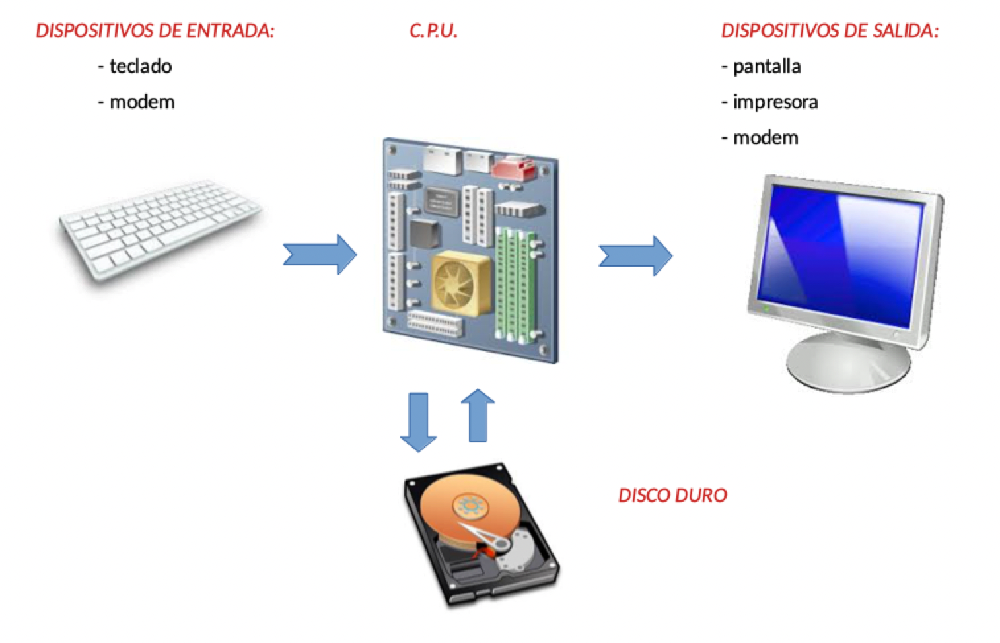
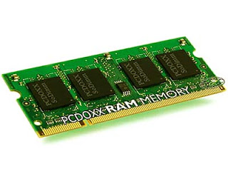

Dígitos binarios¶
Cuando accedemos a cualquier página web o descargamos nuestro correo, se produce una transferencia de información que viaja por la línea en forma de señales eléctricas, ópticas o lo que determine la tecnología.
Se trata de una combinación de dos tipos de señales, algo parecido a lo que sucede con el sistema Morse. Pero en lugar de representarlas con puntos y rayas, en el mundo de los ordenadores utilizamos ceros y unos. Que quede bien claro que lo que viaja por un cable no son “palotes” ni “roscos”. Los dígitos binarios solo son un ejercicio de abstracción, una forma de interpretar las señales.
Supongamos que queremos transmitir la palabra Hola. La secuencia podría ser algo así como:
01001000011011110110110001100001
Cada letra del alfabeto se representa con una combinación de dígitos:
| Carácter | Representación |
|---|---|
| H | 0100 1000 |
| o | 0110 1111 |
| l | 0110 1100 |
| a | 0110 0001 |
La transferencia de información no solo se establece entre ordenadores. Este flujo de ceros y unos también se produce entre los componentes de la máquina, el teclado, la pantalla o el disco duro:

De esta forma, si estamos usando un procesador de textos y tecleamos la palabra hola, cada tecla genera una secuencia de ceros y unos que viajará a la memoria del ordenador. Al pulsar en la opción de menú Archivo > Guardar, el texto se enviará al disco duro.
Los datos viajan continuamente, y se almacenan temporalmente en unos chips llamados memoria RAM, formada por millones de núcleos microscópicos capaces de adoptar dos estados, representando de esta forma los ceros y unos a memorizar:

La memoria RAM contiene solo los datos manejados por los programas en ejecución. Al finalizar cada programa o apagar el ordenador, se borra su contenido, por lo que tendremos que almacenar la información en algún disco duro o dispositivo similar si queremos que no se pierda. Al igual que sucede con la RAM, los discos están formados por millones de partículas capaces de representar dos estados, que visualizamos como ceros y unos.
Nota:
La palabra RAM es acrónimo de Random Access Memory, es decir, un dispositivo de memoria donde podemos acceder de forma inmediata a cualquier dato al azar (random), sin tener que examinar el resto de datos. Es lo opuesto a dispositivos de almacenamiento secuencial, como es el caso de las cintas de audio y vídeo, donde para encontrar cualquier información hay que pasar por el resto de datos hasta encontrar lo que buscamos.
En resumen, los ordenadores son máquinas concebidas para transmitir y memorizar información en forma de dígitos binarios. Estos reciben el nombre de bits, abreviatura de binary digits.